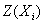
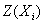

Найти начальное опорное решение и путем перебора опорных решений определить оптимальное решение задачи линейного программирования
 (минимальные значения
(минимальные значения  выделены синим цветом),
соответствующее опорное решение и значение целевой функции  на этом решении. Номера столбцов для выбора разрешающих элементов принимались произвольно.
выделены синим цветом),
соответствующее опорное решение и значение целевой функции  на этом решении. Номера столбцов для выбора разрешающих элементов принимались произвольно.
Таблица 1.
Сравниваем значения целевой функции на полученных опорных решениях: .
Делаем вывод, что оптимальным решением является .
Ответ: .